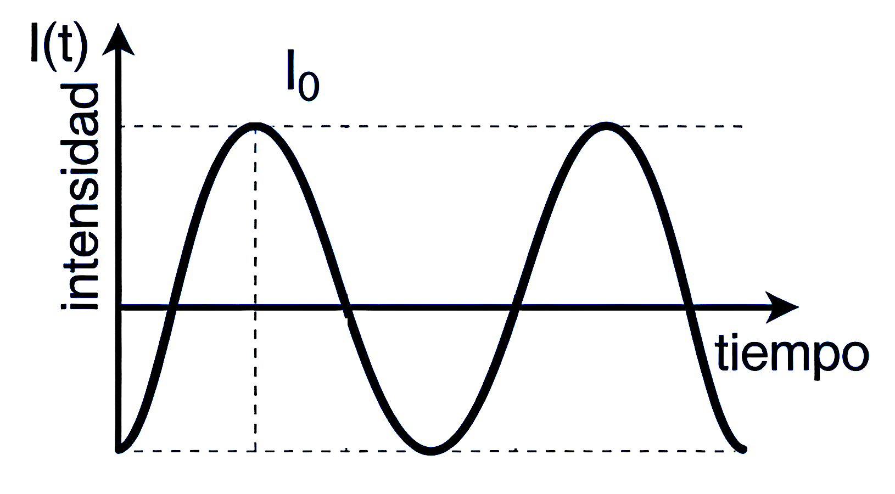
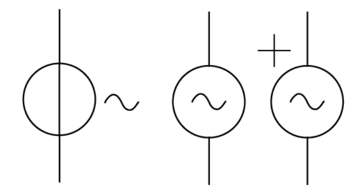

La corriente alterna (CA) es el flujo eléctrico periódico, alterno y cuya ley de variación en el tiempo es senoidal. Es la que generan los alternadores en las centrales eléctricas y la que se transporta a los lugares de consumo, donde la transformamos en otros tipos de energía.
Por tanto, la CA es una corriente con las siguientes características:
- Es variable en el tiempo.
- Su sentido cambia periódicamente, pasando de positivo a negativo y viceversa.
- Es simétrica (alcanza los mismos valores en un sentido y en otro).
- Es sinusoidal. Es decir, sigue una expresión matemática de coseno (\(I(t) = I_0 \cdot \cos(\omega t)\)) o seno (\(I(t) = I_0 \cdot \operatorname{sen}(\omega t)\)).

La corriente alterna es producida por inducción en una espira o solenoide de \(N\) espiras que gira en el interior de un campo magnético con velocidad angular \(\omega\). La máquina que genera esta corriente se denomina alternador. Los símbolos que se suelen utilizar para representar un alternador en un circuito son los siguientes:

1.1 Conceptos fundamentales
- Frecuencia: Es el número de veces que cambia de dirección la corriente en un segundo y se mide en hercios (Hz).
- Frecuencia en España: En nuestro sistema eléctrico se utilizan los 50 Hz, aunque existen aplicaciones especiales (electrónica, radiocomunicaciones) donde se usan frecuencias de kHz o MHz.
- Transmisión de energía: Aunque los electrones apenas se desplazan unas centésimas de milímetro antes de cambiar de sentido (debido a su baja velocidad de deriva), la energía se transmite como una onda electromagnética a velocidades cercanas a la de la luz, de forma similar a como se propagan las ondas sonoras en el aire.